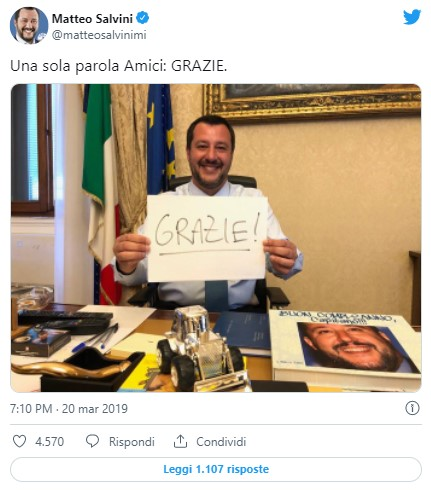

Intorno alle 4 del mattino del 16 agosto 2018, per rispetto delle leggi nazionali e internazionali che impongono di soccorrere chiunque si trovi in difficoltà in mare, la nave “Ubaldo Diciotti CP 941″ della Guardia costiera italiana soccorre 190 migranti. Per cinque giorni l’imbarcazione rimane ferma al largo di Lampedusa: solo 13 migranti vengono fatti sbarcare perchè in gravi condizioni di salute. Il 20 agosto la nave Diciotti si dirige verso il porto di Catania su disposizione del ministro dei Trasporti Danilo Toninelli ma il Viminale nega l’autorizzazione allo sbarco lasciando 177 migranti a bordo della nave.
Secondo il ministro dell’Interno Matteo Salvini il governo attende che altri stati europei si impegnino a prendere in esame la loro richiesta di protezione internazionale. Il 22 agosto sono stati fatti scendere 29 minorenni non accompagnati. Solo la notte tra il 25 e il 26 agosto viene autorizzato lo sbarco delle 148 persone ancora a bordo della nave Diciotti che vengono accolte dalla Conferenza episcopale italiana, dall’Albania e dall’Irlanda.
Il fascicolo viene quindi trasmesso alla procura guidata da Carmelo Zuccaro che il 1° novembre chiede l’archiviazione per i fatti avvenuti nel porto del capoluogo etneo. il Tribunale dei ministri di Catania rigetta la richiesta di archiviazione e il 24 gennaio 2019 chiede al Senato l’autorizzazione a procedere contro Salvini.
I giudici di Catania motivano la decisione con queste parole: «E’ convincimento di questo tribunale che la condotta in esame abbia determinato plurime violazioni di norme internazionali e nazionali, connotandosi per ciò solo di quella indubbia illegittimità integrante il reato ipotizzato». Sequestro di persona aggravato, previsto dall’articolo 605 del codice penale (“commi I, II n.2 e III”). Perchè «l’obbligo di salvare la vita in mare costituisce un preciso dovere degli Stati e prevale su tutte le norme finalizzate al contrasto dell’immigrazione irregolare».
La richiesta inviata al Senato ricorda che anche «la stessa Corte Costituzionale, in diverse circostanze, ha avuto modo di evidenziare che la discrezionalità nella gestione dei flussi migratori incontra chiari limiti, sotto il profilo della conformità alla Costituzione e del bilanciamento di interessi di rilievo costituzionale, nella ragionevolezza, nelle norme di trattati internazionali che vincolano gli Stati contraenti e, soprattutto, nel diritto inviolabile della libertà personale (articolo 13 della Costituzione), trattandosi di un bene che non può subire attenuazioni rispetto agli stranieri in vista della tutela di altri beni costituzionalmente tutelati».
«L’inviolabilità del diritto alla libertà personale è riconosciuta anche dall’articolo 5 della Convenzione per la Salvaguardia dei diritti dell’Uomo e delle libertà fondamentali“. Per queste motivazionali “non è ravvisabile la scriminante ipotizzata – conclude il tribunale – in quando la decisione del ministro ha costituito esplicita violazione delle Convenzioni internazionali in ordine alle modalità di accoglienza dei migranti soccorsi in mare, e al contempo, non sussistevano profili di ordine pubblico di interesse preminente e tali che giustificassero la protratta permanenza dei migranti a bordo della Diciotti».
 Il 19 febbraio la maggioranza della Giunta per le immunità vota contro l’autorizzazione a procedere nei confronti di Salvini. Il 20 marzo il Senato respinge la richiesta di autorizzazione ai sensi dell’art. 96 della Costituzione con 237 voti favorevoli e 61 contrari: il ministro Salvini è salvo.